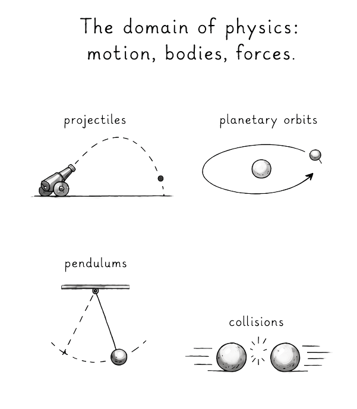
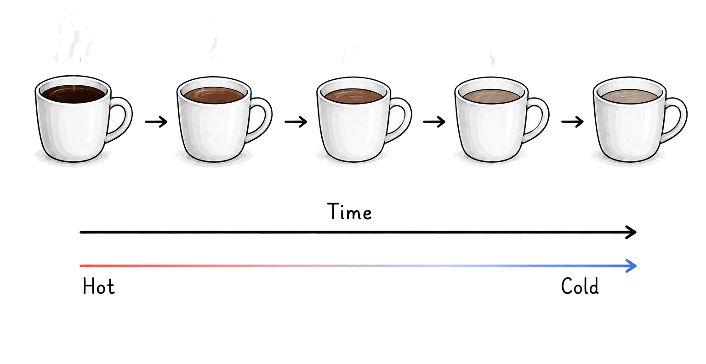

Newton's laws of motion make no distinction between past and future. Any motion that can happen in one direction may happen just the same in the reverse.
That does not mean Newton's equations predict apples could spontaneously rise from the ground. It means that if every particle involved in the process had its motion reversed perfectly, the equations would describe the reversed trajectory just as consistently as the forward one.
Newton was probably sharp enough to notice that people grow old, not young, and tomorrow is never yesterday; however, this direction of change over time was simply considered unrelated to the fabric of motion and matter.

Yet the scope of physics tends to broaden with time, and by the nineteenth century, matter was understood by many to be composed of tiny moving particles (although still debated).
Heat, which had previously been thought of as some kind of invisible, massless liquid type of substance, was increasingly understood as arising from the microscopic motion of particles.
The paradox:
- At the observable level, heat flows in one direction: from hotter to colder regions.
- But heat arises from motion and matter, and the laws of motion and matter do not describe a specific direction.
Irreversible thermodynamic behaviour appeared to emerge from reversible Newtonian laws...

It might seem absurd to ask the question: "If you left a hot cup of coffee in a room, why would it not simply remain hot?" or "Why does it never get hotter?"
But this became one of the central problems of nineteenth-century physics.